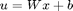
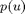
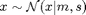
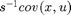

conlin.m
Summary: Affine controller  with input dimension D and control dimension E. Compute mean and covariance of the control distribution  from a Gaussian distributed input . Moreover, the  is computed.
function [M, S, V, dMdm, dSdm, dVdm, dMds, dSds, dVds, dMdp, dSdp, dVdp] ... = conlin(policy, m, s)
Input arguments:
policy policy structure .p parameters that are modified during training .w linear weights [ E x D ] .b biases/offset [ E ] m mean of state distribution [ D ] s covariance matrix of state distribution [ D x D ]
Output arguments:
M mean of predicted control [ E ] S variance of predicted control [ E x E ] C inv(s) times input-output covariance [ D x E ] dMdm deriv. of mean control wrt input mean [ E x D ] dSdm deriv. of control covariance wrt input mean [E*E x D ] dCdm deriv. of C wrt input mean [D*E x D ] dMds deriv. of mean control wrt input covariance [ E x D*D] dSds deriv. of control covariance wrt input covariance [E*E x D*D] dCds deriv. of C wrt input covariance [D*E x D*D] dMdp deriv. of mean control wrt policy parameters [ E x P ] dSdp deriv. of control covariance wrt policy parameters [E*E x P ] dCdp deriv. of C wrt policy parameters [D*E x P ]
where P = (D+1)*E is the total number of policy parameters
Copyright (C) 2008-2013 by Marc Deisenroth, Andrew McHutchon, Joe Hall, and Carl Edward Rasmussen.
Last modified: 2012-07-03
Contents
High-Level Steps
- Extract policy parameters from policy structure
- Predict control signal
- Compute derivatives if required
function [M, S, V, dMdm, dSdm, dVdm, dMds, dSds, dVds, dMdp, dSdp, dVdp] ... = conlin(policy, m, s)
Code
% 1. Extract policy parameters from policy structure w = policy.p.w; % weight matrix b = policy.p.b; % bias/offset [E D] = size(w); % dim of control and state % 2. Predict control signal M = w*m + b; % mean S = w*s*w'; S = (S+S')/2; % covariance V = w'; % inv(s)*input-output covariance % 3. Compute derivatives if required if nargout > 3 dMdm = w; dSdm = zeros(E*E,D); dVdm = zeros(D*E,D); dMds = zeros(E,D*D); dSds = kron(w,w); dVds = zeros(D*E,D*D); X=reshape(1:D*D,[D D]); XT=X'; dSds=(dSds+dSds(:,XT(:)))/2; % symmetrize X=reshape(1:E*E,[E E]); XT=X'; dSds=(dSds+dSds(XT(:),:))/2; wTdw =reshape(permute(reshape(eye(E*D),[E D E D]),[2 1 3 4]),[E*D E*D]); dMdp = [eye(E) kron(m',eye(E))]; dSdp = [zeros(E*E,E) kron(eye(E),w*s)*wTdw + kron(w*s,eye(E))]; dSdp = (dSdp + dSdp(XT(:),:))/2; % symmetrize dVdp = [zeros(D*E,E) wTdw]; end